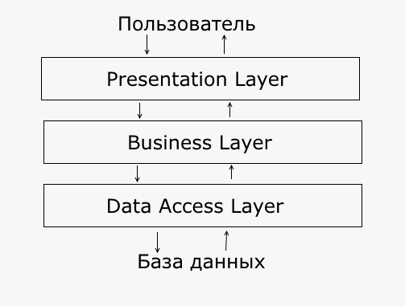

Архитектура и Жизнь#
Виды типовых архитектур#
В Enterprise разработке есть несколько видов архитектур, которые могут пересекаться. Например, монолит + трехслойная архитектура.
-
По размеру сервисов:
-
Монолитная архитектура. Все приложение выполнено в одном большом сервисе.
Плюсы и минусы
Плюсы:
- Нет накладных расходов на взаимодействие между модулями системы, так как все происходит в памяти в рамках одной jvm.
- Имеет более простой дизайн (не надо писать код для взаимосвязи сервисов)
- Не требует сложной инфраструктуры для запуска и эксплутации (на практике для больших монолитов все сложнее)
- Самый простой вариант
Минусы:
- Не может адекватно горизонтально масштабироваться, следовательно, не держит больших нагрузок, тем более пиковых
- Сложно масштабировать разработку, так как общая кодовая база. При большой команде разработчиков, они начинают мешать друг другу
- Очень большое время бустрапа (долго запускается). При разработке и дебаге, это здорово бесит и снижает продуктивность
- Чаще принимает вид огромного монстра, который жрет огромное количество ресурсов, требует для запуска целых ритуалов, работает не быстро, но все боятся это трогать и просто докупают ресурсы для сервера, потому что так выходит дешевле, чем переписать
-
Сервисная архитектура (SOA). Система состоит из нескольких сервисов, каждый из которых выполняют свою задачу.
Плюсы и минусы
Плюсы:
- Умеет масштабироваться горизонтально, но до определенного предела.
- Обладает простым и логичным дизайном
- Просто писать, просто поддерживать
- Не требует сложной инфраструктуры для запуска и эксплутации (хватает docker swarm)
Минусы:
- Большой (реально большой) нагрузки не держат (не highload)
- Часто требуются внешние системы для связи между сервисами (брокер очередей например), а это дополнительные наклады расходы на поддержку, эксплутацию + дополнительная точка отказа
-
Микросервисная архитектура. Система состоит из множества маленьких (маленькие, это когда не влом написать заново) сервисов, который каждый выполняет свою задачу.
Плюсы и минусы
Плюсы:
- Хорошо горизонтально масштабируются
- Хорошо масштабируются в плане разработки, позволяют гораздо быстрее создать готовый продукт и быстрее его развивать
- Сервисы очень маленькие, легко понять, а если не поняли, написать заново.
- Позволяет писать на целом зоопарке технологий, так как нет общей кодовой базы (или она маленькая)
Минусы:
- Сложность. Микросервисные системы очень сложные -- распредленные транзакции, service-discovery, версионность протоколов и API не делают вашу жизнь проще.
- Для работы такой системы требуется сложная инфраструктура, так как с большим догом гулять проще, чем с десятком чихуа-хуа. Требуется много различных сторонних сервисов для организации взаимодействия между сервисами и их правильная настройка.
-
-
По внутренней структуре:
-
Трехслойная архитектура.

Иногда ее называют тортик-архитектура. Принципы:
- Приложение делится на 3 слоя
- Каждый слой должен зависеть только от слоя на один уровень ниже (но только строго на один уровень ниже, т.е. Presentation Layer (servlet) зависит от Business Layer, но ничего знает про Data Access Layer (repository)).
- Каждый слой ничего не должен знать про слои выше.
Виды слоев:
-
Presentation Layer -- слой для взаимодействия с пользователем. Данный слой ответственнен прием и отдачу данных, их преобразование в термины вашей системы. Например, пользователь присылает вам запрос с json-сообщением, а слой представления должен преобразовать этот запрос в объект
Task. И наоборот, данный слой конвертирует сущности вашей системы в формат, удобный для пользователя (тот же самый json, html страничка и так далее.).Важно
Слой представления не должен содержать в себе логики. Он отвечает только за конвертацию входных данных в термины вашей системы и наоборот. Любая логика запрещена. Это правило следует из принципа Единой ответственности.
-
Business Layer -- слой бизнес-логики. Самый главный слой вашей системы. Инкапсулирует логику работы приложения.
-
Data Access Layer -- слой взаимодействия с хранилищем данных. Хранилищем данных может выступать не только СУБД, но и веб-сервисы, файлы. В этом слое реализованы атомарными операции с данными (CRUD). Если на Data Access Layer вам хочется сделать в одном методе несколько вызовов к бд, это означает, что вашему коду место на слой выше.
-
Не трехслойная. Здесь все просто, либо она трехслойная, либо какая-то другая (зависит уже от приложения)
-
Виды технических систем#
На практике встречаются чаще всего два типа систем:
-
CRUD + бизнес-логика. Приложения для манипуляции бизнес-сущностями.
Например, у нас есть студия фитнеса. К нам приходит новый клиент (CRUD операции) и записывается на тренировку (бизнес-логика, то есть реализация какого-то реального бизнес-процесса).
Такие приложения строятся по трехслойной монолитной архитектуре, реже - микросервисной. Сервисная архитектура представлена как Монолит + вспомогательнные сервисы (отправка почты или типа того)
-
Pipeline обработки данных. Системы для обработки данных. Выглядит как граф последовательных обработчиков данных.
Типовая структура: источники данных -> цепочка обработчиков -> потребители данных.
Легко отличить от CRUD-скуки тем, что источники данных и потребители данных это разные объекты.
-
Нестандартные вещи, например, CQRS + ES
По большему счету системы делятся на две большие группы:
-
Структура данных первична. Системы, где структура хранимых и обрабатываемых данных важнее, чем способы их обработки. Сюда относятся все системы, имеющие сложные реляционные структуры (Издательство - Автор - Книга - Список книг - Читатель). Проектируется в первую очередь реляционная модель данных, а уже потом бизнес-логика.
-
Структура логики обработки данных первична. Системы, где логика обработки данных важнее, чем структура данных, которые обрабатываются. Структуры данных между собой часто не связаны совсем, либо граф зависимостей минимален. Проектируется в первую очередь граф обработки данных.
Реляционная модель#
Не придумал текст#
-
Отказоустойчивость (fault tolerance) -- свойство системы, позволяющее в случае неработоспособности отдельного элемента или функции приложения не выводить из строя само приложение. Другими словами, устойчивость программы к отказам.
-
Доступность -- свойство системы, позволяющее быть защищенной и легко восстановливаемой от простоев в короткое время и автоматизированными средствами